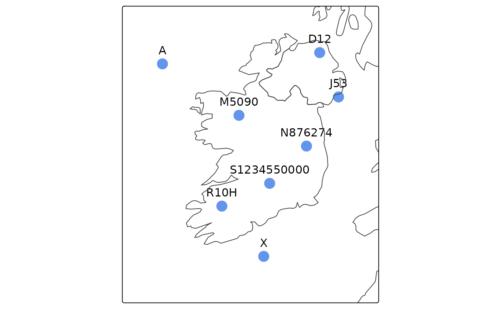
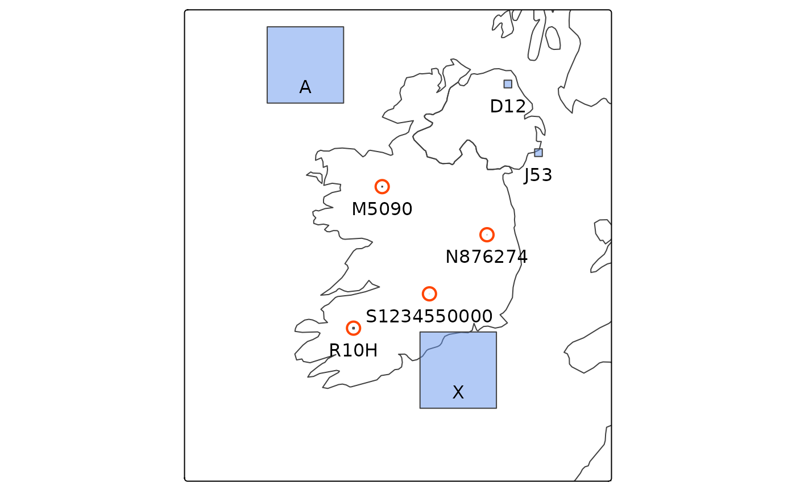

Introduction
The Irish Grid (EPSG:29903) is a coordinate reference system spanning the island of Ireland. Created by the Ordnance Survey Ireland (now Tailte Éireann) and Ordnance Survey of Northern Ireland, locations within the Irish Grid are defined by an X and Y coordinate.
Irish grid references are an alternative way of referring to locations on the Irish Grid. An Irish grid reference consists of a letter, optionally followed by an easting, northing and possibly a final letter. The first letter (e.g. “N”) refers to a particular 100 km square on the Irish Grid. There are 25 such 100 km squares - the letter “I” is skipped. The easting and northing refer to a square within the 100 km square. An Irish grid reference with a 1-digit easting and northing (e.g. “N16”) refers to a particular 10 km square wtihin the 100 km square “N”. A 5-digit easting and northing (e.g. “N 12345 67890”) refers to a particular 1 m square. The tetrad form of Irish grid reference consists of a 10 km square reference followed by a letter (e.g. “N16K”). This refers to a particular 2 km square. There are 25 tetrads in a 10 km square - the letter “O” is not used.
There are many R packages facilitating spatial data analysis and visualisation. The igr package is designed to simplify using datasets containing Irish grid references in R. It translates Irish grid references to and from Irish Grid coordinates (X and Y), or to and from sf (simple feature) objects that other R packages can work with. The igr package supports precisions of Irish grid reference from 100 km to 1 m including tetrads, mixes of precision, and Irish grid references with or without whitespace between the letters, eastings and northings.
When converting Irish grid references to point locations (using
igr_to_ig(), or st_igr_as_sf() with the
default polygons=FALSE), the south west corners of the
relevant Irish Grid squares are returned by default. The centroids of
the Irish Grid squares can be returned by using
centroids=TRUE. When converting to polygons (using
st_igr_as_sf() with polygons=TRUE), the size
of each polygon is precision-aware.
The functions st_igr_as_sf() and
st_irishgridrefs() convert to and from sf objects in any
coordinate reference system.
Installation
To install the production version of igr from CRAN:
install.packages("igr")To install the development version of igr from GitHub:
# Install remotes package if needed
install.packages("remotes")
# Install development version of igr package from GitHub
remotes::install_github("digitalnature-ie/igr")Checking Irish grid references
The validity of Irish grid references can be checked with the
function igr_is_valid().
# Sample of valid and invalid Irish grid references
igrs <- c("A", "A16", "A123678", "BAD", "I12", "", "B125", "Z", "N12D")
igr_is_valid(igrs)
#> [1] TRUE TRUE TRUE FALSE FALSE FALSE FALSE TRUE TRUEConverting from Irish grid references
To convert a vector of Irish grid references to Irish Grid
coordinates use igr_to_ig(). By default the south west
corners of the Irish grid references are returned.
igrs <- c("A", "D12", "J53", "M5090", "N876274", "S1234550000", "R10H", "X")
igr_to_ig(igrs)
#> $x
#> [1] 0 310000 350000 150000 287600 212345 112000 200000
#>
#> $y
#> [1] 400000 420000 330000 290000 227400 150000 104000 0Alternatively, the centroids of the Irish grid references can be returned:
igr_to_ig(igrs, centroids = TRUE)
#> $x
#> [1] 50000.0 315000.0 355000.0 150500.0 287650.0 212345.5 113000.0 250000.0
#>
#> $y
#> [1] 450000.0 425000.0 335000.0 290500.0 227450.0 150000.5 105000.0 50000.0The Irish grid references may have spaces between the grid reference components:
ws_igrs <- c("A", "D 12", "J 5 3", "M 50 90", "N 876 274", "S 12345 50000", "R10 H", "X")
igr_to_ig(ws_igrs)
#> $x
#> [1] 0 310000 350000 150000 287600 212345 112000 200000
#>
#> $y
#> [1] 400000 420000 330000 290000 227400 150000 104000 0These sample Irish grid references have a mix of precisions. The precisions in metres can be returned by supplying a column name for the precision data:
igr_to_ig(igrs, precision = "prec")
#> $x
#> [1] 0 310000 350000 150000 287600 212345 112000 200000
#>
#> $y
#> [1] 400000 420000 330000 290000 227400 150000 104000 0
#>
#> $prec
#> [1] 1e+05 1e+04 1e+04 1e+03 1e+02 1e+00 2e+03 1e+05A list or data.frame of Irish grid references can be converted to an
sf object using st_igr_as_sf(). By default the geometries
returned are points located at the south west corner of each grid
reference, and the coordinate reference system is Irish Grid (EPSG:29903):
igr_df <- data.frame(igr = igrs)
points_sf <- st_igr_as_sf(igr_df, "igr")
points_sf
#> Simple feature collection with 8 features and 1 field
#> Geometry type: POINT
#> Dimension: XY
#> Bounding box: xmin: 0 ymin: 0 xmax: 350000 ymax: 420000
#> Projected CRS: TM75 / Irish Grid
#> igr geometry
#> 1 A POINT (0 4e+05)
#> 2 D12 POINT (310000 420000)
#> 3 J53 POINT (350000 330000)
#> 4 M5090 POINT (150000 290000)
#> 5 N876274 POINT (287600 227400)
#> 6 S1234550000 POINT (212345 150000)
#> 7 R10H POINT (112000 104000)
#> 8 X POINT (2e+05 0)Irish grid references can be converted to coordinates in any coordinate reference system, e.g. Longitude and Latitude (WGS 84).
points_sf <- st_igr_as_sf(igr_df, "igr", crs = 4326)
points_sf
#> Simple feature collection with 8 features and 1 field
#> Geometry type: POINT
#> Dimension: XY
#> Bounding box: xmin: -11.1116 ymin: 51.25359 xmax: -5.702335 ymax: 55.01528
#> Geodetic CRS: WGS 84
#> igr geometry
#> 1 A POINT (-11.1116 54.80789)
#> 2 D12 POINT (-6.281164 55.01528)
#> 3 J53 POINT (-5.702335 54.19703)
#> 4 M5090 POINT (-8.7606 53.85718)
#> 5 N876274 POINT (-6.687144 53.28992)
#> 6 S1234550000 POINT (-7.818534 52.60153)
#> 7 R10H POINT (-9.287254 52.18127)
#> 8 X POINT (-8.000721 51.25359)These points can be plotted by the tmap package. A basic outline of Ireland and the United Kingdom can be retrieved from the maps package.
if (requireNamespace("maps", quietly = TRUE) &
requireNamespace("tmap", quietly = TRUE) &
requireNamespace("units", quietly = TRUE)) {
library(maps)
library(tmap)
library(units)
ie_uk_sf <- maps::map("world",
regions = c("Ireland", "UK"),
plot = FALSE,
fill = TRUE
) |>
sf::st_as_sf(ie_uk) |>
sf::st_transform(29903)
tm_shape(points_sf, ext = 1.4) +
tm_dots(size = 1, fill = "cornflowerblue") +
tm_text("igr", ymod = 1) +
tm_shape(ie_uk_sf) +
tm_borders()
}
The Irish grid references can also be converted to polygon geometries. Each polygon spans the full extent of a grid reference, so a set of grid references of varying precision will result in a set of polygons with different sizes.
polygons_sf <- st_igr_as_sf(igr_df, "igr", polygons = TRUE)
polygons_sf
#> Simple feature collection with 8 features and 1 field
#> Geometry type: POLYGON
#> Dimension: XY
#> Bounding box: xmin: 0 ymin: 0 xmax: 360000 ymax: 5e+05
#> Projected CRS: TM75 / Irish Grid
#> igr geometry
#> 1 A POLYGON ((1e+05 5e+05, 1e+0...
#> 2 D12 POLYGON ((320000 430000, 32...
#> 3 J53 POLYGON ((360000 340000, 36...
#> 4 M5090 POLYGON ((151000 291000, 15...
#> 5 N876274 POLYGON ((287700 227500, 28...
#> 6 S1234550000 POLYGON ((212346 150001, 21...
#> 7 R10H POLYGON ((114000 106000, 11...
#> 8 X POLYGON ((3e+05 1e+05, 3e+0...Plotting these polygons:
if (exists("ie_uk_sf")) {
# identify small polygons requiring highlighting
polygons_sf$area <- sf::st_area(polygons_sf)
small_polygons_sf <- polygons_sf[polygons_sf$area <= units::set_units(5000000, m^2), ]
tm_shape(ie_uk_sf, bbox = points_sf, ext = 1.4) +
tm_borders() +
tm_shape(polygons_sf) +
tm_polygons(fill = "cornflowerblue", fill_alpha = 0.5) +
tm_text("igr", ymod = -1) +
tm_shape(small_polygons_sf) +
tm_bubbles(
fill_alpha = 0, col = "orangered", lwd = 2,
size = 0.8
)
}
Ignoring invalid Irish grid references
To be consistent with the behaviour of sf::st_as_sf(),
an error is returned if any of the Irish grid references supplied to
st_igr_as_sf() are invalid. To avoid this scenario, any
invalid Irish grid references can be filtered out using
igr_is_valid():
some_invalid_df <- data.frame(igr = c(igrs, "BAD", "I", "", "123", "N1"))
some_invalid_df
#> igr
#> 1 A
#> 2 D12
#> 3 J53
#> 4 M5090
#> 5 N876274
#> 6 S1234550000
#> 7 R10H
#> 8 X
#> 9 BAD
#> 10 I
#> 11
#> 12 123
#> 13 N1
valid_sf <- st_igr_as_sf(some_invalid_df[igr_is_valid(some_invalid_df$igr), , drop = FALSE])
valid_sf
#> Simple feature collection with 8 features and 1 field
#> Geometry type: POINT
#> Dimension: XY
#> Bounding box: xmin: 0 ymin: 0 xmax: 350000 ymax: 420000
#> Projected CRS: TM75 / Irish Grid
#> igr geometry
#> 1 A POINT (0 4e+05)
#> 2 D12 POINT (310000 420000)
#> 3 J53 POINT (350000 330000)
#> 4 M5090 POINT (150000 290000)
#> 5 N876274 POINT (287600 227400)
#> 6 S1234550000 POINT (212345 150000)
#> 7 R10H POINT (112000 104000)
#> 8 X POINT (2e+05 0)In tidy r this can be written as:
valid_sf <- some_invalid_df |>
dplyr::filter(igr_is_valid(igr)) |>
st_igr_as_sf()Converting to Irish grid references
Irish Grid coordinates can be converted to Irish grid references
using ig_to_igr(). The first two columns in the matrix
supplied must be the Irish Grid X coordinate and Y coordinate
respectively. Any other columns are ignored.
p <- matrix(c(0, 490000, 400000, 0, 453000, 4000), ncol = 2, byrow = TRUE)
colnames(p) <- c("x", "y")
p
#> x y
#> [1,] 0 490000
#> [2,] 400000 0
#> [3,] 453000 4000
ig_to_igr(p)
#> [1] "A000900" "Z000000" "Z530040"Spaces or other strings can be inserted between the letter, easting and northing:
ig_to_igr(p, sep = " ")
#> [1] "A 000 900" "Z 000 000" "Z 530 040"The generated Irish grid references can be limited to a particular precision by specifying the number of digits for both easting and northing. Between 0 (for 100 km precision) and 5 (for 1 m precision) digits are supported.
ig_to_igr(p, digits = 1) # 10 km precision
#> [1] "A09" "Z00" "Z50"
ig_to_igr(p, digits = 5) # 1 m precision
#> [1] "A0000090000" "Z0000000000" "Z5300004000"Precision can also be specified in terms of metres. Supported values
are 1, 10, 100, 1000 (1 km), 2000 (tetrad), 10000, and 100000 (100 km).
Any value supplied for precision overrides any value
supplied for digits.
ig_to_igr(p, precision = 10000) # 10 km precision
#> [1] "A09" "Z00" "Z50"
ig_to_igr(p, precision = 2000) # 2 km precision - tetrad form
#> [1] "A09A" "Z00A" "Z50H"
ig_to_igr(p, precision = 1) # 1 m precision
#> [1] "A0000090000" "Z0000000000" "Z5300004000"A data.frame of Irish Grid coordinates can be converted:
p_df <- data.frame(p)
p_df
#> x y
#> 1 0 490000
#> 2 400000 0
#> 3 453000 4000
ig_to_igr(p_df)
#> [1] "A000900" "Z000000" "Z530040"An sf object containing geometries of type POINT can be converted to
Irish grid references using st_irishgridrefs():
p_sf <- sf::st_as_sf(p_df,
crs = 29903,
coords = c("x", "y")
)
p_sf
#> Simple feature collection with 3 features and 0 fields
#> Geometry type: POINT
#> Dimension: XY
#> Bounding box: xmin: 0 ymin: 0 xmax: 453000 ymax: 490000
#> Projected CRS: TM75 / Irish Grid
#> geometry
#> 1 POINT (0 490000)
#> 2 POINT (4e+05 0)
#> 3 POINT (453000 4000)
st_irishgridrefs(p_sf)
#> [1] "A000900" "Z000000" "Z530040"To append Irish grid references (with spaces) to the original sf object using base r:
p_sf$igr <- st_irishgridrefs(p_sf, sep = " ")
p_sf
#> Simple feature collection with 3 features and 1 field
#> Geometry type: POINT
#> Dimension: XY
#> Bounding box: xmin: 0 ymin: 0 xmax: 453000 ymax: 490000
#> Projected CRS: TM75 / Irish Grid
#> geometry igr
#> 1 POINT (0 490000) A 000 900
#> 2 POINT (4e+05 0) Z 000 000
#> 3 POINT (453000 4000) Z 530 040In tidy r this can be written as:
p_sf <- p_sf |>
dplyr::mutate(igr = st_irishgridrefs(sep = " "))